Set 01
Daylight rooftop
115/120 left inliers · 74/80 right inliers
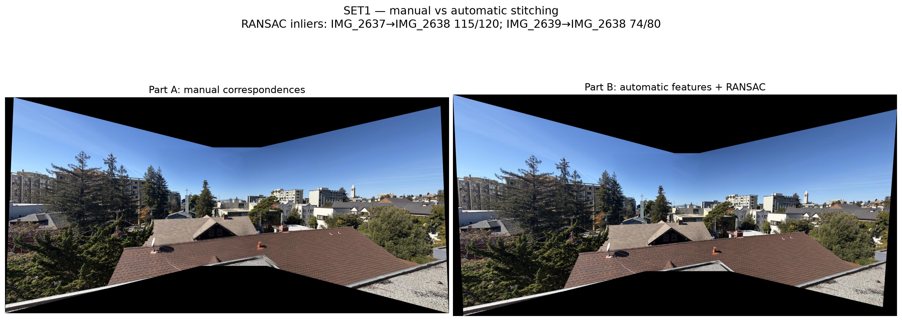
CS180 / Project 4B
Implementing “Multi-Image Matching using Multi-Scale Oriented Patches” by Brown et al.
Replacing hand-clicked correspondences with a complete automatic pipeline: find stable corners, describe their neighborhoods, match them across views, and reject mistakes before stitching.
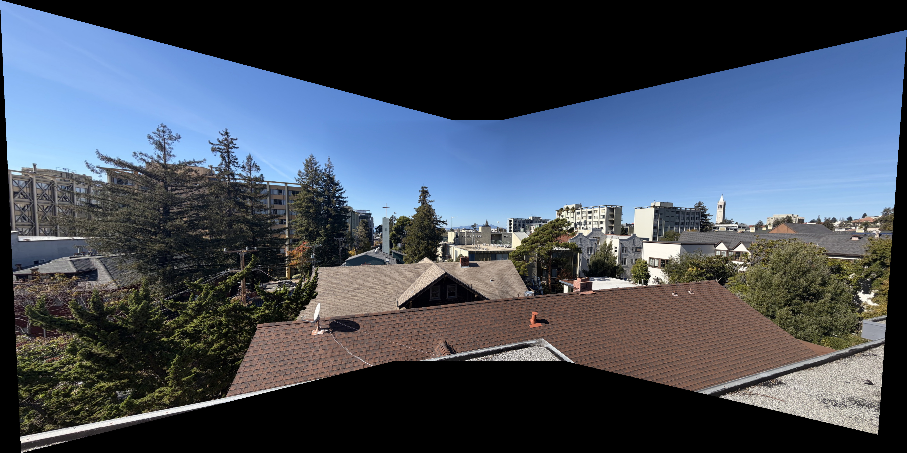
Overview
Part A used correspondences that I selected by hand. Here I built the machinery needed to discover those relationships automatically.
Each stage reduces uncertainty. Harris proposes many possible locations, ANMS spreads them across the frame, descriptors summarize local appearance, and RANSAC keeps only matches that agree on one projective transformation.
Part B.1 / Harris corners and ANMS
I first computed a single-scale Harris response and kept strong local maxima. The raw detector naturally clusters around detailed regions, so I applied Adaptive Non-Maximal Suppression to retain 500 strong points with large suppression radii. This trades a few locally strongest corners for much better coverage across the whole image.
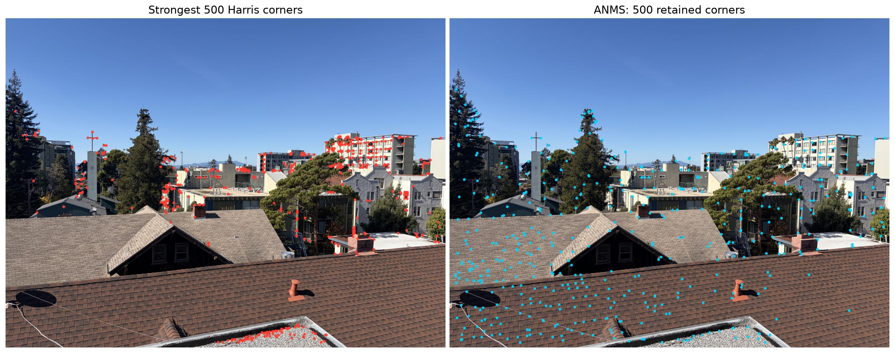
Part B.2 / Feature descriptors
For every ANMS point, I sampled an axis-aligned 40 × 40 neighborhood and reduced it to an 8 × 8 descriptor. Sampling from the larger window acts as a low-pass filter, so the descriptor records broad local structure instead of fragile pixel noise. I then subtracted its mean and divided by its standard deviation to reduce sensitivity to brightness and contrast.
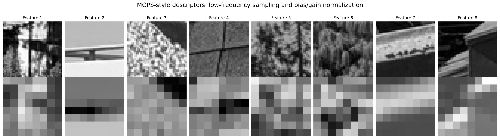
Part B.3 / Feature matching
I compared every descriptor in one image against the descriptors in the other using squared Euclidean distance. A match survives only when its nearest neighbor is substantially better than its second nearest neighbor. This Lowe ratio test removes ambiguous patches such as repeated windows, roof shingles, and smooth regions.
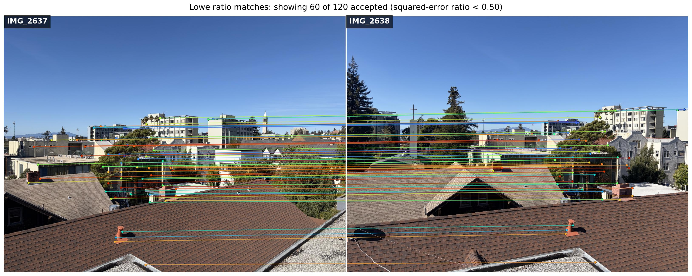
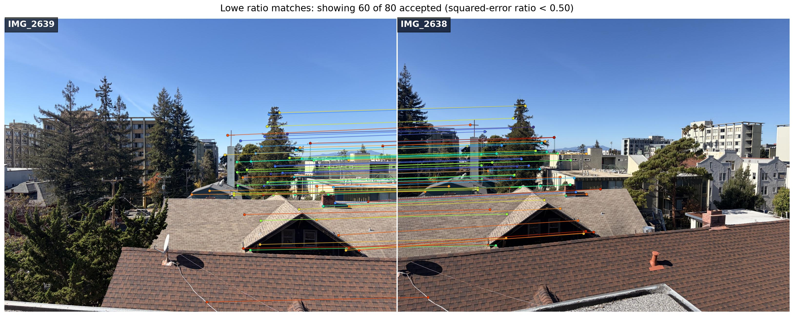
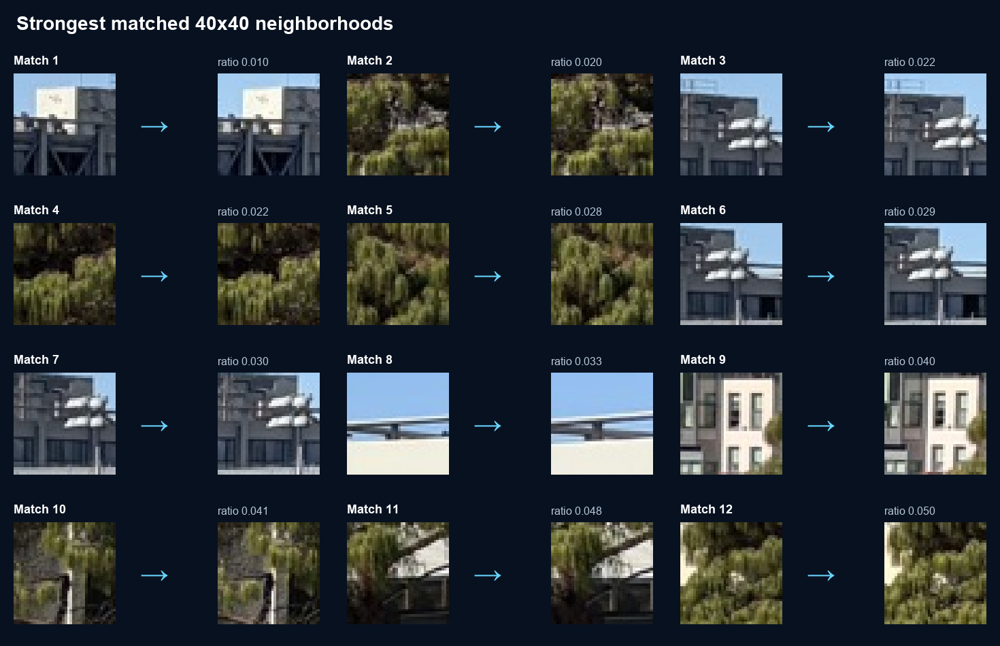
Decision rule
d1 / d2 < 0.5
A small ratio means the best candidate is distinctive. A ratio near one means two candidates look almost equally plausible, so the match is not trustworthy enough to keep.
Part B.4 / Four-point RANSAC
Descriptor matching still leaves occasional mistakes. I repeatedly sampled four matches, solved for a homography, and measured every match's reprojection error. The model with the largest consensus set won, then I recomputed it using all inliers. The final transforms feed the same inverse warping and feather blending pipeline from Part A.
Choose four tentative correspondences without replacement.
Estimate a normalized DLT homography from those four pairs.
Project all matches and count errors below the 6 pixel threshold.
Use every inlier from the best trial to obtain the final homography.
Geometric verification
Green connections agree with the recovered homography. Red connections fail the reprojection test. The strongest result is not the model built from the four sampled points, but the model refit from its full consensus.
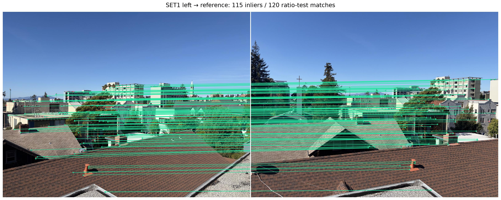
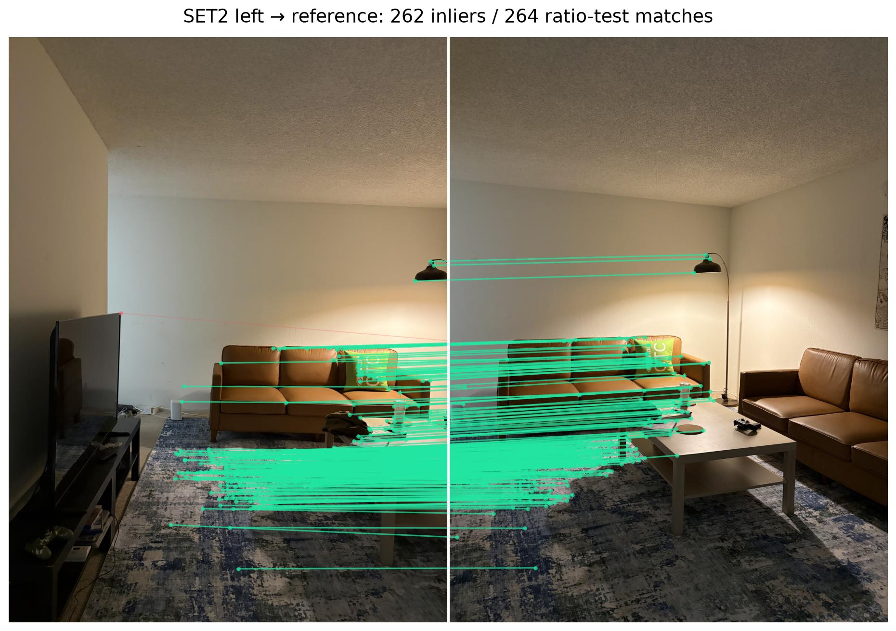
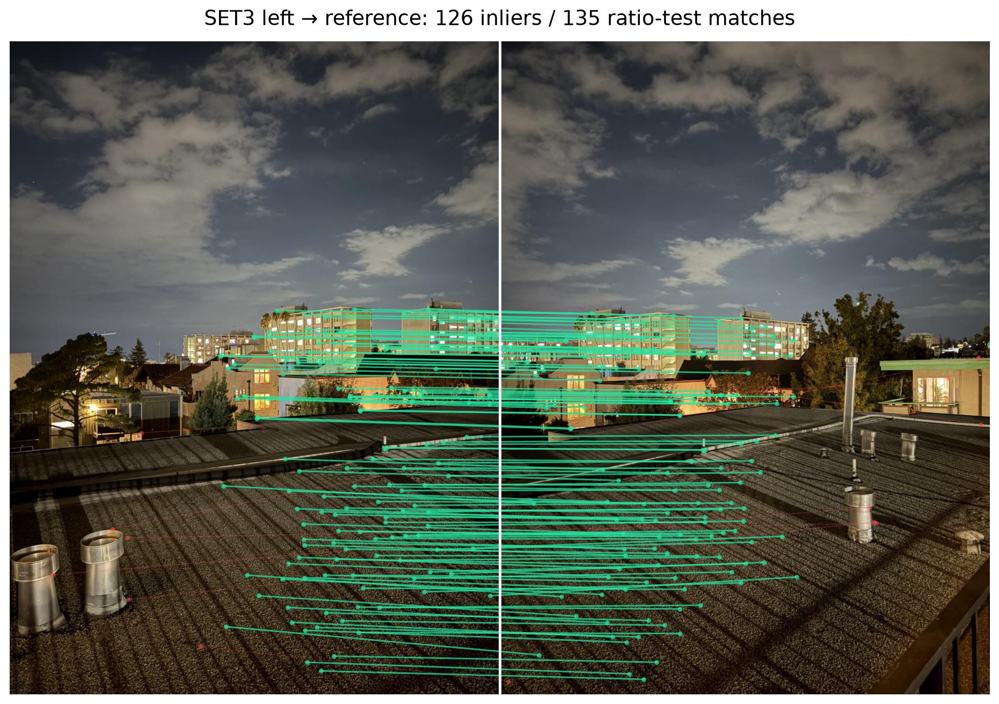
Final results
The automatic correspondences recover nearly the same projective alignment as the hand-selected points from Part A. Small differences are most visible near the outer boundaries, while the overlapping scene structure stays aligned.
115/120 left inliers · 74/80 right inliers

262/264 left inliers · 187/194 right inliers
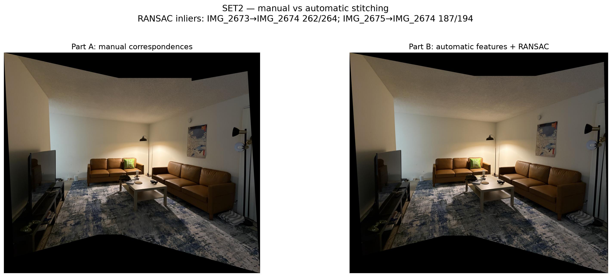
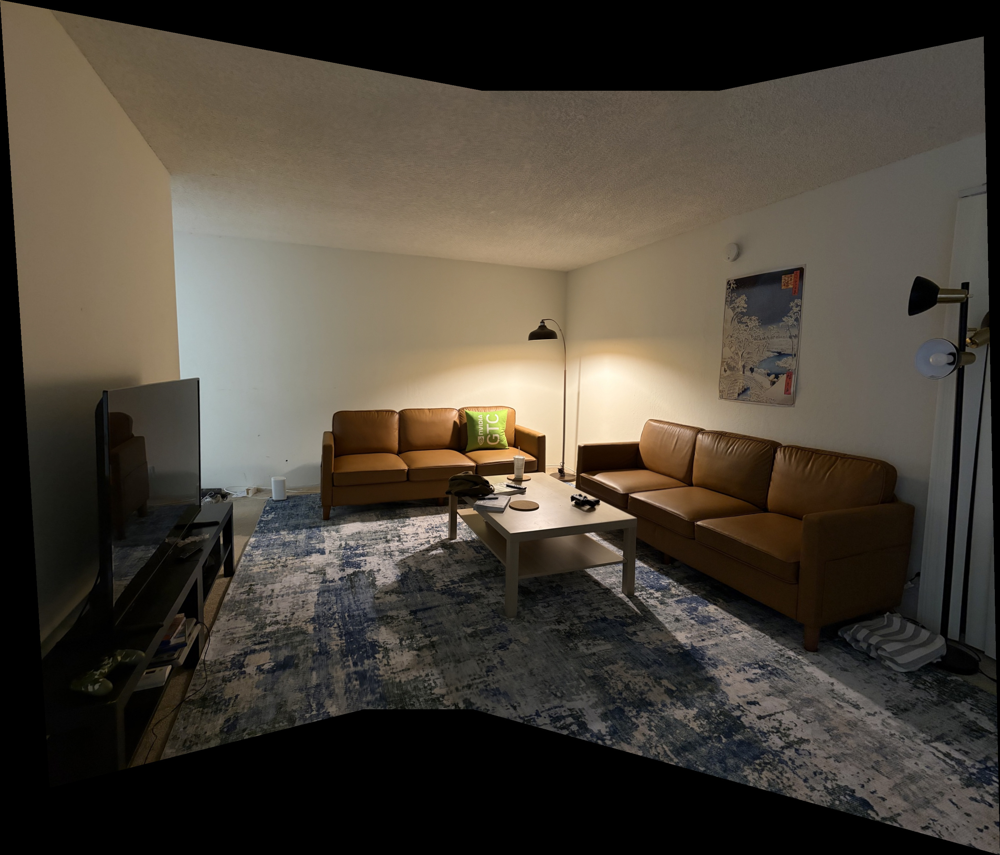
126/135 left inliers · 111/122 right inliers
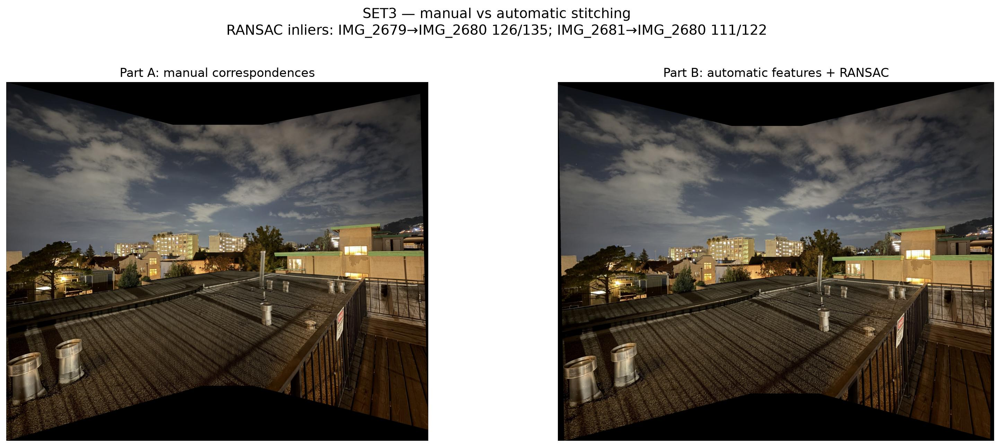
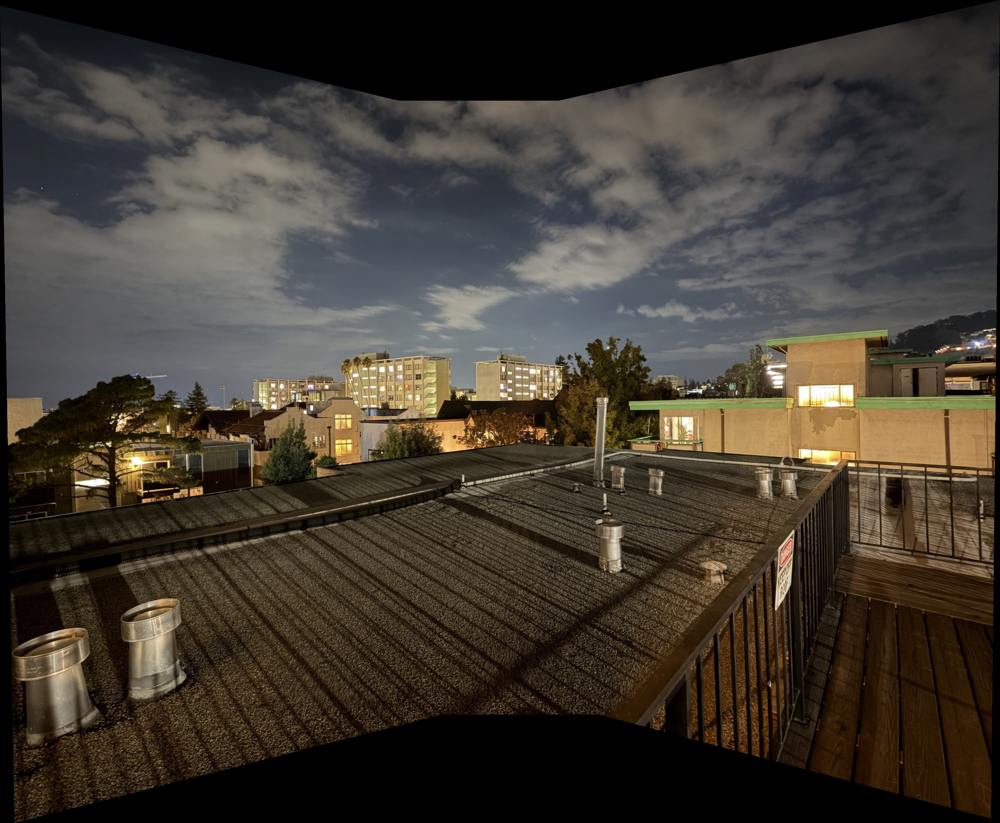
Final takeaway
Good autostitching is a sequence of filters. Harris supplies candidates, ANMS improves their coverage, the ratio test removes appearance ambiguity, and RANSAC turns the remaining local matches into reliable global alignment.